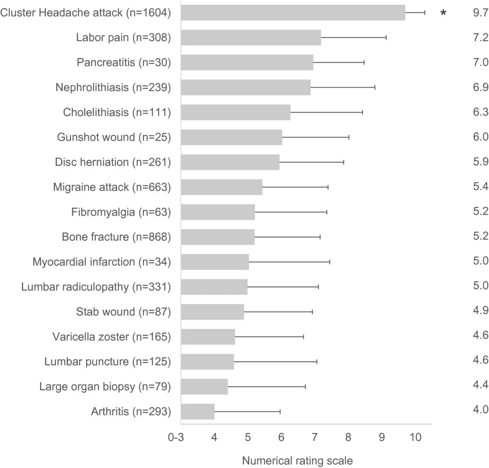

Ад в голове и эмоциональная пытка
В Unsong был момент, когда силы Ада в качестве политического хода прислали на землю кассету с записью – что именно творится в Аду. Главу, где это описывается, автор покрыл trigger warnings и упомянул, что для понимания сюжета ее читать не обязательно; потом ему сказали, что этих trigger warnings было недостаточно, и нужно добавить еще дополнительных trigger warnings что “нет я серьезно”; и вот сейчас, как видите, я покрываю еще одним слоем trigger warning для тех, кто неизбежно пойдет читать. Как из этого можно догадаться, в Аду все плохо.
Питер Сингер, моральный философ, имеет в этой книге камео. Его основной заход – что люди делают добро неоптимально, типовой шпиль “эффективных альтруистов”, что да, пожертвовать деньги на, скажем, лечение ребенка от рака – то несомненно добро, но вот если вы вместо этого пошлете эти же деньги централизованно в Африку на лечение малярии, вы спасете в десять раз больше детей на удельный доллар, так что давайте лучше делать это.
За и против такого подхода разбирали более умные люди, чем я, и мне нечего добавить в центральную идею. Но в отличие от Питера Сингера в реальном мире, Питер Сингер в мире Unsong увидел ту злополучную кассету. Это впечатлило его достаточно, что он моментально бросил все, что он делал до этого, и начал монолитным порывом продвигать новую мысль. Что самое необходимое, что можно вообще сделать, дело настолько важное, что затмевает все остальные, настолько ультимативно доброе, что все добро и зло, когда-либо существовавшее на земле вместе взятое, все ужасы, все победы – суть ошибка округления…
…это найти способ освободить людей из Ада.
Один из менее популярных, но довольно интересных споров – что может быть сильнее, физическая боль или ментальная? Что хуже – удары плетью или публичное унижение? Прыгнуть в огонь или смерть близкого человека? Как их вообще сравнивать?
Кластерные головные боли еще порой называют suicide headaches. Они регулярно упоминаются в тредах на Реддите “какая самая сильная боль, которую вы испытали”. В частности, женщины в один голос говорят, что боль при родах и рядом не стояла.

Когда-то давно у меня были кластерные головные боли. Хотите мое мнение, какая боль может быть сильнее – физическая или ментальная?
Ментальная. Обсессивно-компульсивное расстройство запросто может сделать так, что кластерные головные боли и рядом не стояли.
Конечно, может я их помню неправильно. Конечно, свежая боль в памяти стоит ярче, чем та, которую от меня отделяет буквально стена амнезии.
И мой ОКР так-то объективно и не очень силен, проявляет себя довольно редко. Многих бьет намного сильнее. И намного дольше.
Но я не могла не впечатлиться.
Мама не раз советовала мне идти в психиатрию – может, я сумею ее реально продвинуть и помочь страдальцам. Я тогда сказала, что не хочу, потому что мне оно не очень интересно.
Но может, интересность должна была быть ошибкой округления.